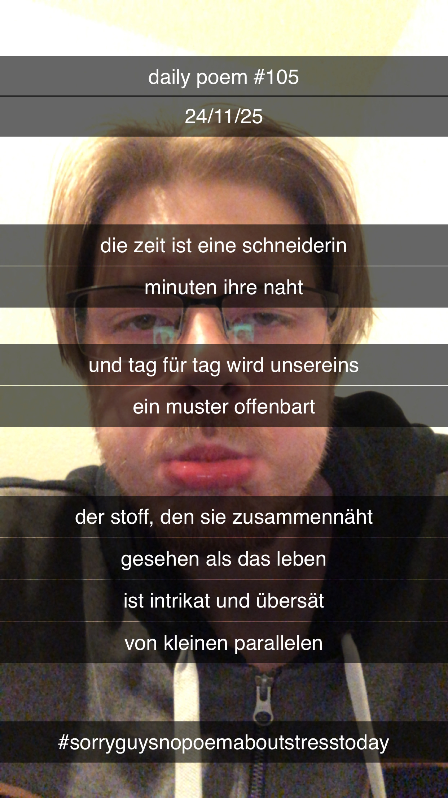

Die Zeit ist eine Schneiderin
[105]Die Zeit ist eine Schneiderin,
Minuten ihre Naht;
Und Tag für Tag wird unsereins
Ein Muster offenbart –
Der Stoff, den sie zusammennäht –
Gesehen als das Leben –
Ist intrikat, und übersät
Von kleinen Parallelen.
